pre-recorded lecture 1 intro
Computer Architectur Overview
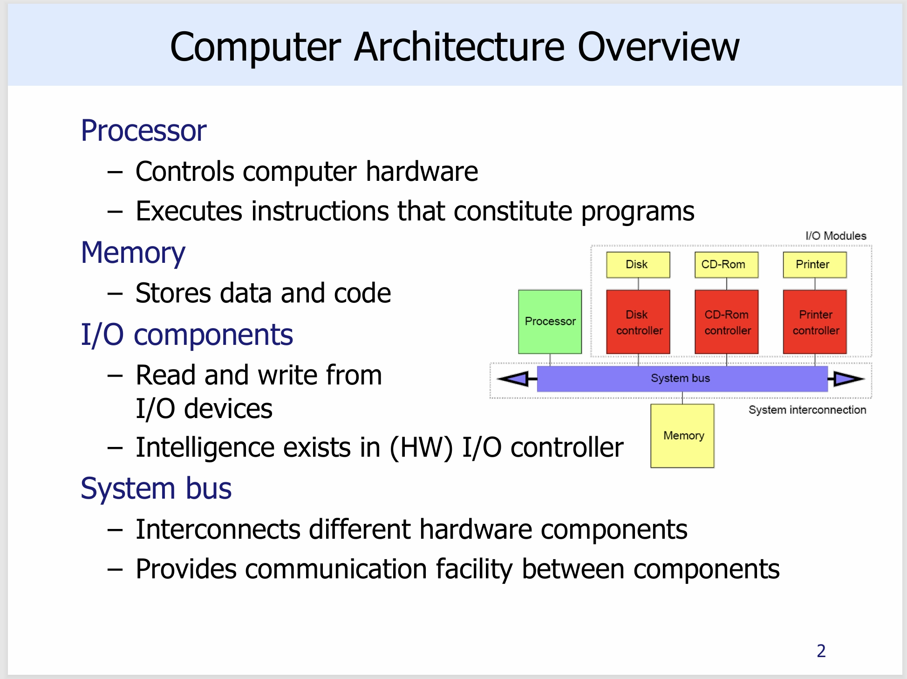
so the primary purpose of the operating system is to provide abstractions of clean interface to the applications
it should also control all the hardwar that connects to the computer
So OS need to
Manage Resources
OS must make efficient use of the limit avalible resource - this includes time, space, money, etc..
OS have to share the resource among multiple users - schedules access and offers a fair allocation - prevent interference between users
The managed resources include - Processors(mainly CPU stuff) - Memory(caches, RAM, etc.) - I/O devices - Internal devices(clocks timer, interrupt controllers) - Persistent storages(disks, SSDs, DVDs, tapes, etc..)
Provide clean Interfaces
OS hides complexity of lower levels from higher levels and provide a clean interface
example:
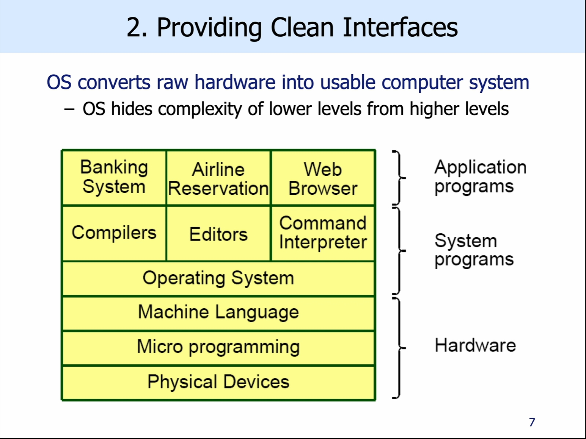
Sharing
OS must share data, programs and hardware - OS use time multiplexing and space multiplexing for this(more later)
OS must offer resource allocation - fair use of memory, CPU time, disk space - simultaneous access to resuorce(Disks, RAM, network, GPU) - mutual exclusion for some resources(guarantee that risky operations are protected) - OS must protect against(accidental or malicious) corruption
Concurrency
OS must support several simultaneous parallel activities - multi users and programs must run in parallel
OS may switch activities at arbitrary times - guarantee fairness and prompt replies
OS must ensure safe concurrency - must offer primitives to sychronise actions - protect user/process interference(Each program wants to have its own space)
Non-determiniism
Because it is concurrent, results from events occur in an unpredictable order
Storing Data
Persistent storage - easy access to files - access controls: protect the files so only authorised people can alter the file - protest against failures - manage storage devices
OS functionality
- SImplified I/O (access disk, or remote file server or DVDs)
- Virtual memory(larger than physical memeory and partition)
- File systems(persistent storages)
- Program interaction and communication
- Network communication(sending/receiving data on network)
- Security(preventing program accessing unauthorised resuorce)
- UI
- other(Administration, managment, accounting)
OS need to support different hardware
lecture 2:
it just introduces different OS, linux and windows
lecture 3: processes
intro:
it is one of the oldest abstractions in computing
it allows a singe processor to run multiple programs simultaneously - processes turn a single CPU into multiple virtual CPUs - Each process runs on a virtual CPU
the processes are isoloated from each other, each with its own address space and program a does not worry about program b
time-slicing:
this is one technique from concurrency
- OS switchses application running onn the physical CPU every 50ms
so we have
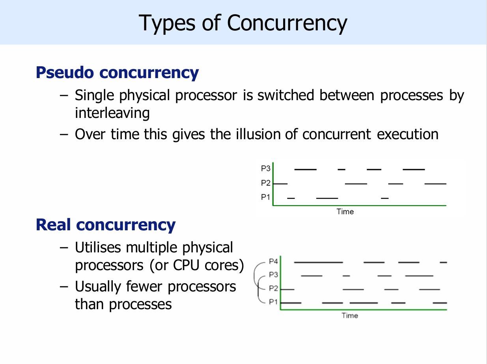
we could optimise it like running gcc when firefox waits for input
context switches:
the processor switches from executing process A to executing process B
it takes periodic scheduling decisions
it may switch processes(cannot be pre-determine because the events are non-deterministic)
context switches are expensive
Direct cost: save/restore process state
Indirect cost: pertubation of memory caches, TLB - Translation lookaside buffers(TLBS), caches mapping of virtual addresses to physical addresses, and is typically flushed on a context seitch - (this will be continued in memory management lectures)
since this is costly, we need to avoid unnecessary context switches
Process
Creation
they are created when - System init - User request - System calls
note that daemons are background tasks, that's why docker daemon
Termination
- Normal completion
- system call: exit() in UNIX, ExitProcess() in Windows
- Abnormal exit: program run into an error or unhandled exception
- Aborted: Process stop due to overruling of its execution(e.g. killed)
- Never: Some processes run in endless loops and never terminated unless error occurs
Case study UNIX:
creating processes:
this Creates a new child process by making the exact copy of parent process image
it returns twice - in parent process: fork() returns process ID of child - in child process: fork() returns 0
#include <unistd.h>
#include <stdio.h>
int main() {
if (fork() != 0) // if this is not in child process
printf("Parent code\n");
else printf("Child code\n");
printf("Common code\n");
}
on error, no child is created, and -1 is returned to the parent
#include <unistd.h>
#include <stdio.h>
int main() {
if (fork() != 0)
printf("A\n");
else {
if (fork() != 0)
printf("B\n");
else printf("C\n");
}
}
executing process
args- path: the full pathname of the program to run
- argv: args passed to main
- envp: environment variables
it changes process image amnd runs new process
for example, a command interpreter could do
while (TRUE) {
read_command(command, params);
if (fork() != 0) // fork off child process, fork fails or is parent process
waitpid(-1, &status, 0); // parent code
else // at this point, we are certain is child process
execve(command, parameters, 0); // child code
}
Wait for process termination
suspends excution of calling process until process wihth PID pid terminates normally or a signal is recieved
we can wait for more than one child - pid = -1: wait for any child - pid = 0: wait for any child in the same process group as caller - pid = - gid: wait for any child with process group gid
returns: - pid of the terminated child process - 0 if WNOHANG is set(call should not block) and no terminated children - -1 on error, with the errno set to indicate error
In UNIX we have both fork() and execve()
but in Windows, CreateProcess() = fork + execve, but it has 10 params
Process Termination
terminates a process - called implicitly when the program finished
never returns in the calling process - returns an exit status to the parent process - stored with in status pointer arg in waitpid()
send signal sig to process pid
UNIX signals
Inter-Process Communication (IPC) mechanism
Signal delivery similar to delivery of hardware interrupts - used to notify process when event occurs
process can send signal to another process if it has permission - kernel can send signal to any process
when?
exception: - division by zero -> SIGFPE - segment violation -> SIGSEGV(you acces memory that is not avaliable) - ...
when the kernel wants to notify the process of an event - e.g. if process writes to a closed pipe -> SIGPIPE
when certain key combations are typed in a terminal - e.g. Ctrl-C -> SIGINT(so you interrupt the process with ctrl + C)
programmatically using the kill() system call
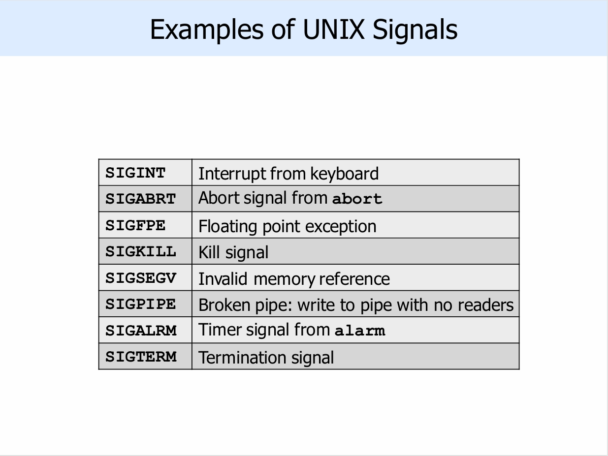
the default action for most signals is to terminate the process
the recieving process may choose to : - ignore it - handle it by signal handler - two signals cannot be ignored/handled: SIGKILL and SIGSTOP
UNIX Pipes:
pipe is connecting the standard output od one processs to the standard input of another
it allow one-way communication between processes
consider the linux commands
two types: unnamed, named
so there is a fd(file desciptor) table in the kernel, and the address of the two ends are stored in the fd table, the child process copies the fd table
it return two file descriptor in fd - fd[0] the read end of the pipe - fd[1] the write end of the pipe
sender shoudl close the read end
reciever should close the write end
If receiver reads from empty pipe, it blocks until data is written at the other end
If sender attempts to write to full pipe, it blocks until data is read at the other end
int main(int argc, char *argv[]) {
int fd[2]; char buf;
assert(argc== 2); // if the number of args is not 2, exit
if (pipe(fd) == -1) exit(1); // if pipe unavaliable, exit
// this also creates a pipe between the two args in fd
if (fork() != 0) {
close(fd[0]);
write(fd[1], argv[1], strlen(argv[1]));
close(fd[1]);
waitpid(-1, NULL, 0);
} else {
close(fd[1]);
while (read(fd[0], &buf, 1) > 0)
printf("%c", buf);
printf("\n");
close(fd[0]);
}
}
at the end of the process, the pipe is closed
named pipes: outlive process which create them
they are store on file system
we want to use these because its faster, it is store in the RAM instead of being optimised by the file system
a pipe is just a buffer, it stores the data from the memory, calling it retrieves data from the buffer
lecture 4: threads
threads are execution atreams that share the sma eaddress space
if multithreading is used, each process can contain one or more threads
why thread?
many appplications contain multiple activities - executes in parallele - access and process the same data - some of which may block
why not process
processes are too heavyweight - diificult to communicate between different address spaces - Activity that blocks may switch out th eentire application - Expensive to context switch - expensive to create/destory activities
problems with thread
shared address space - memory corruption: one thread can write another thread's stack - concurrency bugs: conccurrent access to shared data(possible race conditions)
forking: the previous forking copies the current process, but multiple threads run at the same time
signals - when a signal s arrives, which thread should handle it (currently, all the threads are able to handle it, so we dont know which thread will do it)
case study: PThreads
PThread(POSIX Threads)
defined by IEEE standard and implemented by most UNIX systems
#include <pthread.h>
#include <sys/types.h>
pthread_t //type representing a thread
pthread_attr_t //type representing the attributes of a thread
create a new thread
int pthread_create(pthread_t *thread, const pthread_attr_t *attr, void *(*start_routine)(void*), void *arg)
- the newly created thread is stored in *thread
- function return 0 if the thread was successfully created, or error code
args:
- attr: the thread attributes, can be NULL for default
- start_routine: C function the thread will start executing
- arg: args to be passed to start_routine(of pointer type void*) can be NULL
#include <pthread.h>
#include <stdio.h>
#include <unistd.h>
void *thread_work(void *threadid) {
long id = (long) threadid;
printf("Thread %ld\n", id);
}
int main (intargc, char *argv[]) {
pthread_t threads[5];
long t;
for (t=0; t<5; t++)
pthread_create(&threads[t], NULL,
thread_work, (void *)t);
sleep(10);
}
Terminating thread:
Terminates the thread and makes value_ptr avaliable to any successful join with the terminating thread
- not for the initial thread that start main()
- if main terminates before other threads, calling pthread_exit(), the entire process is terminated
- if pthread_exit() is called in main(), the process continues executing until last thread terminates(or exit())
yielding the CPU
relesease the CPU to let another thread run, returns 0 on success, or an error code
should not use this because we dont know the next time we are going to run the thread that yields again
Joining the threads
block until thread terminates
the value_ptr will be passed to pthread_exit()
#include <pthread.h>
#include <stdio.h>
long a, b, c;
void *work1(void *x) { a = (long)x * (long)x;}
void *work2(void *y) { b = (long)y * (long)y;}
int main (int argc, char *argv[]) {
pthread_t t1, t2;
pthread_create(&t1, NULL, work1, (void*)
3);
pthread_create(&t2, NULL, work2, (void*)
4);
pthread_join(t1, NULL); // a is assigned to 9 only after the thread
pthread_join(t2, NULL); // b is assigned to 16 only after the thread
c = a + b;
printf("3^2 + 4^2 = %ld\n", c);
}
Implementing Threads
User-level threads:
- OS kernel is not aware of the threads
- Each process manages its own threads OS-kernel thinks it is mamaging processes only
- the threads are implemented by software library
- Process maintains thread table for thread scheduling
advantages:
it is fast - thread creation and termination are fast - thread switching is fast(only do registers) - thread synchronisation(e.g. joining other threads) is fast - All these operations do not require kernel involvement
Each application can have its own schduling algorithm
disadvntages
blocking system calls stops all threads in process
- denies one core motivations for using threads
Non-blocking I.O cna be used(e.g. select())
- not elegant
During page fault OS blocks the whold process
- But other threads may be runnable
Kernel-level threads
- Managed by the OS kernel
pthreads are kernel-levels
advantages
blocking system calls/page faults can be easily accommodated
- if one thread calls a blocking system call or causes a page fault, the kernel can shedule a runnable thread from the same process
disadvantages:
thread creation and termination more expensive - require system calls(but still cheaper than process creation/termination) - one mitigation is to recycle threads(thread pools)
thread synchronisation more expensive - requires blocking system calls
thread switching more expensive - require system calls(still cheaper than process switches(same address space))
no application-specific schedulers
hybrid approaches
lecture 5: scheduling
the process states is just a finite state machine
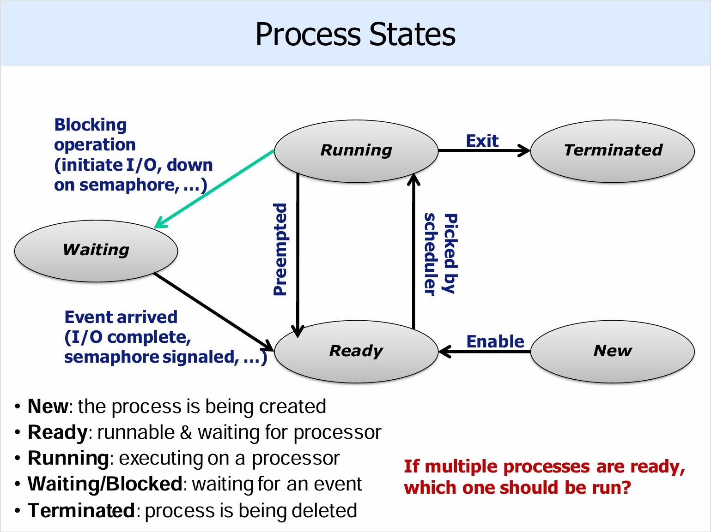
goals of scheduling algorithms
Ensure fairness - comparable processes should get comparable services
Avoid indefinite postponement - No process should starve
Enfore policy - E.g. priorities
Maximise resource utilisation
Minimize overhead - From context switches, scheduling decisions
Batch systems: (Give a batch of task to the system, just do it as fast as possible) - Thoughput: Jobs per unit time - Turnaround time: TIme between job submission and completion
Interactive systems: - Response time crucial: TIme between request issued and first response
Real-time systems: - Meeting deadlines: - - Soft deadlines: leads to degraded video quality(360p, 1080p) - - Hard dealine: e.g. leads to plane crash
preemptive and non-preemptive scheduling
non-preemptive - let process run until it blocks or voluntarily release CPU
preemptive: - let process run for a maximum amount of fixed time - reuqires a clock interrupt
CPU -bound or I/O boun
CPU bound processes - spend most of their time in the CPU
I/O bound processes - spend most of their time waiting for I/O - Tend to only use CPU briefly before issuing I/O request
First-Come First-Served(FCFS)(non-preemptive)
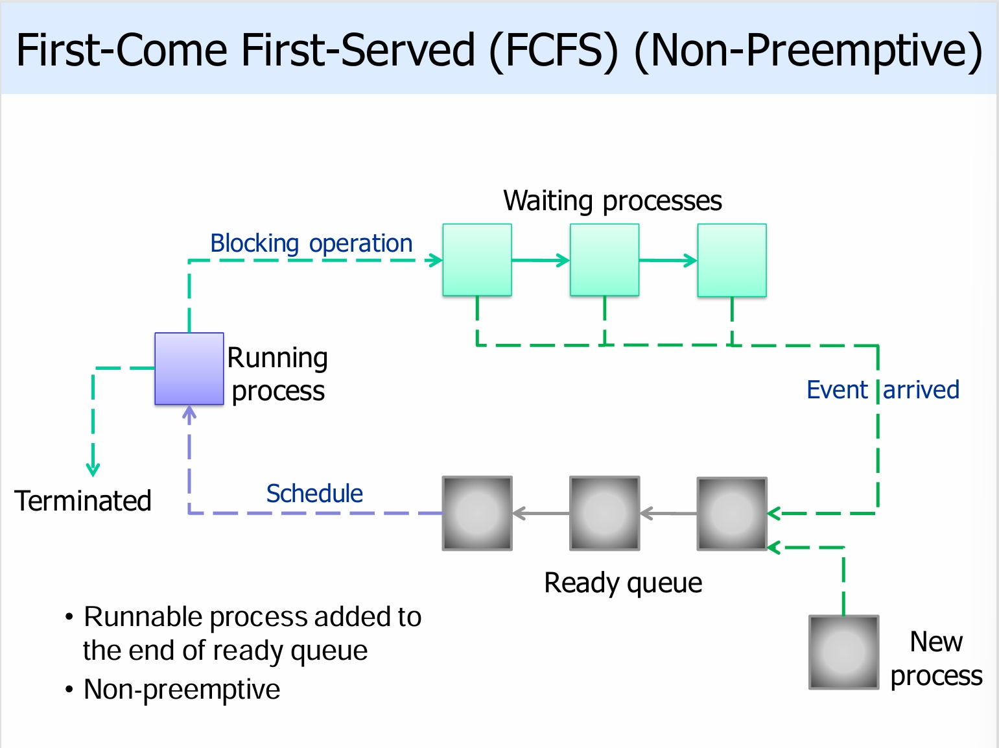
advantage:
No indefinite postponement - All processes are eventually scheduled
Really easy to implement
FCFS Disadvantages
consider a long job is follows by many short jobs
3600s -> 1s -> 1s -> 1s
- Throughput: 3603/4
- Average turnaround time: 14406 / 4
1s -> 1s -> 1s -> 3600s
- Throughput: 3603/4
- Average turnaround time: 3606/4
Round-robin
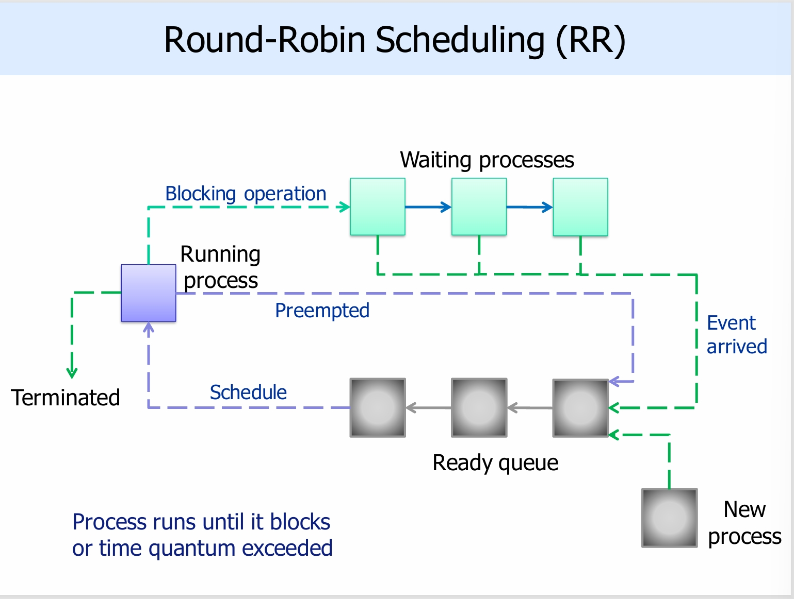
Fairness - ready jobs gets equal shar of the CPU
Response time - Good for small number of jobs
Average turnaround time: - Low when run-times differ - Poor for similar run-times
RR-Quantum(Time slice)
RR Overhead: - 4ms quantum, 1ms context switch time: 20% time -> overhead - 1s overhead, 1ms context switch time: 1% -> overhead
so
Large quantum -> smaller overhead, worse response time
small quantum -> large overhead and better response time
the quantum should be much larger than context switch cost, but provide decent repsonse time
typical value: 10ms - 200ms
- linux: 100ms
- windows client: 20ms
- windows server: 180ms
Shortest Job First (SJF)
Non-preemptive scheduling with run-times known in advance, then we pick the shortest job first
if A(8) -> B(4) -> C(4) -> D(4)
then the turanaround time is 8 + (8 + 4) + (8 + 4 + 4) + (8 + 4 + 4 + 4) = 56
if B(4) -> C(4) -> D(4) -> A(8)
then the turnaround time is 4 + (4 + 4) + (4 + 4 + 4) + (4 + 4 + 4 + 8) = 44
Shortest Remaining Time(SRT)
this is a preemptive version of Shortest Job First - Runtime have to be known in advance
choose the process whose remaining time is shortest
so
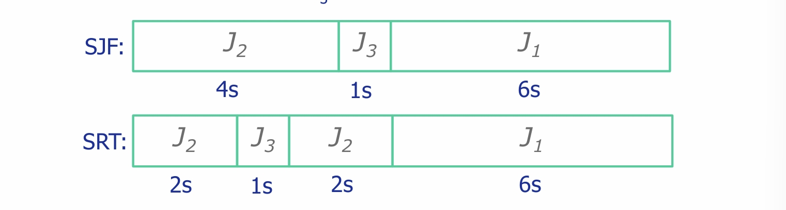
problem: how to know the runtime in advance?
they are not usually available in advance
Compute CPU burst estimates based on heuristics - E.g. based on previous history - Not always applicable
User-supplied estimates - need to counteract cheating to get higher priority
Fair Share Scheduling:
Users are assigned some fraciton of the CPU - Schduler takes into accoun twho owns a process before scheduling it
assume each user take 50% of the CPU - User 1: ABCD - User 2: EF
A RR scheduler would maybe do A E B F C E D A E B F C E D F
so the user list is iterated when scheduling
Priority Scheduling
Jobs are running based on their priority(consider PintOS)
they can be externally defined or based on some process-specific metrics
they can be static(do change) or dynamic(pintos)
the processes with the highest priorities is going to run first
General-Purpose Scheduling
Favoue short and IO bound jobs - good resource utilisation and short response times
they react quickly and can adpat to changes - each process have IO-bound periods and CPU-bound period
Multilevel Feedback Queues
form this on, this would be implementations
implemented on many OSs including pintos
one queue for each priority level, in each queue, we can use round-robin
consider the zipping method in hashset for resolving conflict in same hashcode
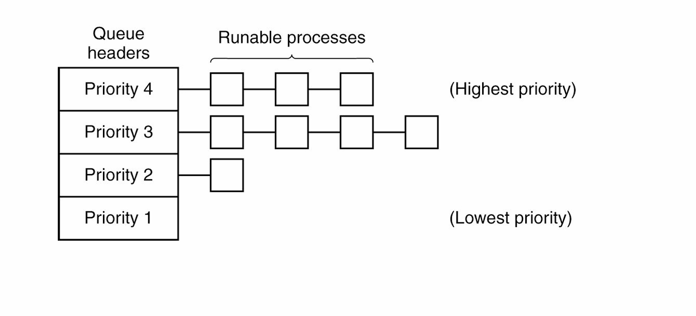
Concerns:
need to determine current nature of the job (IO-bound /CPU-bound)
Need to worry about starvation of lower-priority jobs
feedback mechanism: - priorities recomputed periodically - Aging: increse job;s priority as it waits
this is not very flexible and does not react fast to changes - apps have no control - priorities make no guarantee - often need warm-up
Cheating is a consern: - may add meaningless I/O to boost priority
Cannot donate priority
Lottery Scheduling
Jobs recieve lottery tickets for various resources
at each decision, one ticket is chosen at random and the job holding the ticket wins
so if 100 tickets and P1 has 20 tickets, then in the long run P1 gets 20% of the CPU time
characteristics:
Number of lottery tickets is meaningful, unlike priorities
this is highly responsive - new job given p% of tickets has the p% chance to get the resource at the next scheduling decision
no starvation
jobs can exchange tickets for donations
adding or removing the jobs affect remaining jobs proportionally
Unpredictable response-time: unlucky
Summary:
Scheduling algorithms often need to balance conflicting goals, so different algorithms are suitable for different scheduling goals
Tutorial
1
Five batch jobs, A through E, arrive at a data centre at essentially the same time. Their estimated running time are as follows: A=12min, B=5min, C=17min, D=9min and E=10min. Their (externally defined) priorities are: A=8, B=5, C=2, D=6 and E=3, with a lower value corresponding to a higher priority. For each of the following scheduling algorithms, determine the turnaround time for each job, and the average turnaround time for all jobs. Ignore process switching overhead and assume all jobs are completely CPU bound
non-preemptive priority scheduling
non-preemptive so run to finish
the order is C -> E -> B -> D -> A following the priority order
FCFS(first come first serve)
order: A -> B -> C -> D -> E
Shortest job first(SJF)
order: B -> D -> E -> A -> C
Round robin with a time quantum of 1 minute
(A(1) -> B(1) -> C(1) -> D(1) -> E(1)) * 5
(A(1) -> C(1) -> D(1) -> E(1)) * 4
(A(1) -> C(1) -> E(1)) * 1
(A(1) -> C(1)) * 2
C(5) * 5
to do: add the turnaround times
quiz2:
1.
Which of the following constitute the state of a process? - Process Identification (e.g pid) \(\correct\) - The process' address space \(\correct\) - Caches in kernel space \(\times\) - OS provided resources(e.g. open files/devices, handlers for child processes) \(\correct\) - Main memeory (DRAM) \(\times\) - The process' virtual CPU (e.g register) \(\correct\)
2.
Which term describes the following "Switching between processes at regular time intervals the illusion of parallelism" - Context Switch - Time Slicing \(\correct\) - Deterministic Scheduling
3.
The overhead associated with a context switch includes the direct cost of saving state, and restoring the state of the process being switched to. What is the main indirect cost? - Restoring registers - Pertubation of caches:
comment: This is a considerable cost - any context switch will inevitably results in cache misses.
4.
Question:
How many processes need to be running to only waste 10% or less of CPU time, if each process spends 80% of time waiting for I/O?
(clue: Consider the probability that at a given time that n processes are waiting. P1 waits for 80% of the time, in that 80% P2 can be run, and wastes 80% of the 80% of the time P1 is waiting, etc.)
11, so continuing the hint, every spare 80% should be occupied by another thread, then another 80% of 80% is wasted, this forms a sequence with common ratio 0.8, 11 terms is sufficient to sum up the time used to 90%
5.
question:(too long to format in markdown)
Compare reading a file using a single-threaded file server and a multithreaded server, running on a single-CPU machine.
It takes 15 msec to get a request for work, dispatch it, and do the rest of the necessary processing, assuming that the data needed are in the block cache.
If a disk operation is needed, as is the case one-third of the time, an additional 75 msec is required, during which time the thread sleeps.
For this problem, assume that thread switching time is negligible. How many requests/sec can the server handle with 1 thread, 2 threads or 6 threads
see https://edstem.org/us/courses/67154/discussion/5479922
- for one thread, we can at most do 3 requests in 15*3 + 75 = 120ms, so 25req/s
- for two threads, the second thread can do the same in the 5/8 time that thread 1 is sleeping, so \(25 + 25 \times\frac{5}{8} = 40.625\), we can do this because we only care about the average not actual
- similar for 6 threads \(25 + \frac{5}{8}\times 25 + (\frac{5}{8}) \times (25) +\dots + (\frac{5}{8})^5\times(25) \approx 62.69\)
6
How many parameters does the "CreateProcessA" function have?
10, just see the notes
7
A developer wants to display a prompt ("do you wish to save?") when the user uses Ctrl-C on his program when running from the terminal.
In order do this, the developer needs to create an register a signal handler. Which signal do they need to handle?
- SIGKEYBOARD
- SIGSEGV
- SIGINT \(\correct\)
- SIGPIPE
8
How many X Y and Z characters are printed by this program?
#include <uninstd.h>
#include <stdio.h>
int main() {
if (fork() != 0) {
printf("X"); fflush(stdout);
}
if (fork() != 0) {
printf("Y"); fflush(stdout);
}
printf("Z");
}
every fork creates a child thread
so, first X, forked so 2Y, and 4Z
9
Given a given number n < N, how many instances of n are printed?
#include <unistd.h>
#include <stdio.h>
int main() {
for (int i = 0; i < N; i++) {
if (fork()) {
printf("%d", i); fflush(stdout);
}
}
}
same, every fork(even in the child process) creates a exactly same process, so every fork doubles the number of n, \(2^N\)
10
What is a thread?
- A process
- A single stream of instructions being executed \(\correct\)
- A king of thin yarn used for sewing
11
Why do Oses provide the thread abstraction? - Allow time sharing on a common resource(This is the process abstraction's job) \(\correct\) - Provide a common API on top of CPU threads so programs do not need to know the specifics of CPU they are executing on \(\correct\) - Provice a security boundary - To preven ta failure of one part of the program from crashing another(if any thread in a multithread program segfaults and the signal is unhandled, the entire process and all threads terminate)
12
Which of the following are examples of a user-level thread implementation used on operating systems that support kernel threads?
- Pthreads (this is user-level thread as in notes)
- Goroutines \(\correct\)
- Python threading \(\correct\)
- C++ std::thread \(\times\)(kernal level)
13
A student is compiling a basic pthread example with gcc, however keep getting a linking error: undefined reference to `pthread_create'
What flag might they be missing when compiling with GCC.
-pthread
14
What is the value_ptr parameter for?
int pthread_join(pthread_t thread, void **value_ptr)
A pointer to the location that value_ptr from pthread_exit(void *value_ptr) should be placed
15
Linux was heavily influenced by which microkernel operating system (clue: Linux originally implemented its file system, but linux used a monolithic design)
MINIX, factual stuff
16
What is the main disadvantage of a microkernel design?
- High complexity - easy to introduce bugs
- IPC overhead - more ipc requied as more OS components operate in user-mode \(\correct\)
- Portability - More difficult to separate machine specific code
lecture6:
Sychronization I
critical sections and mutual exclusion:
-
critical sections/region the region of code in which the processes aceess a shared resource
-
mutual exclusion this ensures that if a process is excuting its critical section, no other process can be executing it
so A synchronisation mechanism is require at entry adn exit of the critical section
requirements
no two processes can simultaneously be inside a critical section
no other process outside the critical section may prvent othe processes from entering the critical section
correspondingly, process requestign permission to enter must be allowed if no process is inside a critical section
no process requiring access to critical section can be delayed forever
no assumptions are made about the speed
disabling interrupts:
this is what pintos does
void Extract(int acc_no, int sum)
{
CLI(); // CLI is the assembly disable interrupt
int B = Acc[acc_no];
Acc[acc_no] = B – sum;
STI(); // the assembly enable interrupt
}
but it only works on single-processor systems
some process may never release CPU
Strict Alternation
// TO
while (true) {
while (turn != 0)
/* loop */ ;
critical_section()
turn = 1;
noncritical_section0();
}
// T1
while (true) {
while (turn != 1)
/* loop */ ;
critical_section()
turn = 0;
noncritical_section1();
}
if T0 works for a long time in the noncritical_sention1
and also difficult to implement when there are many threads
Busy waiting
Strict alteration solution requires continuously testing the value of a variable
this a called busy-waiting - wastes CPU time - should onyl do this when the waiting time is expected to be short
some conditions(the idle thread in pintos) can only be checked with busy waiting
Peterson's solution
this is just addapted from strict alternation
// outside the threads
int turn = 0;
int interested[2] = {0, 0};
// thread is 0 or 1
void enter_critical(int thread)
{
int other = 1 – thread;
interested[thread] = 1;
turn = other;
while (turn == other &&
interested[other])
/* loop */ ;
}
void leave_critical(int thread)
{
interested[thread] = 0;
}
// T0
enter_critical(0);
critical_section();
leave_critical(0);
//T1
enter_critical(1);
critical_section();
leave_critical(1);
Atomic Operations:
void Extract(int acc_no,
int sum)
{
int B = Acc[acc_no];
Acc[acc_no] = B – sum;
// if you change it into
// Acc[acc_no] -= sum
// it breaks the atomicity as its just
// syntactic sugar for the two lines above
}
Atomic operation: a sequence of one or more statements that is/appears to be indivisible
all executes or none executes like that of SQL
locks
so locks are implemented this way
void Extract(int acc_no, int sum)
{
lock(L);
int B = Acc[acc_no];
Acc[acc_no] = B – sum;
unlock(L);
}
TSL Instruction:
this is the atomic instruction provided by most CPUs
- Test-and-Set-Lock
- Atomically sets memory location LOCK to 1 and returns old value
Priority Inversion
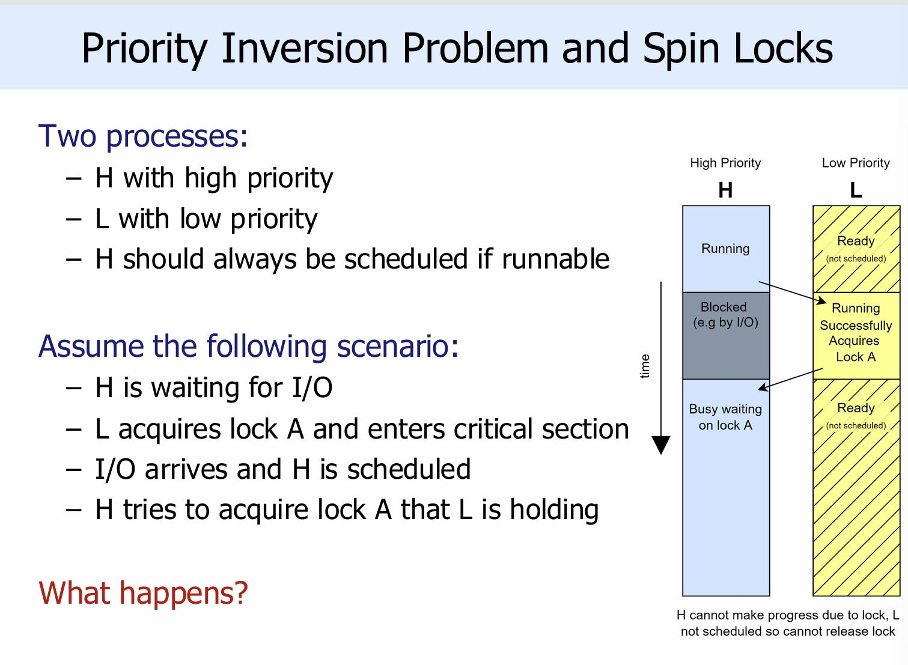
locks granularity
in short, things get messed up if we have a global lock
so we have a single lock for every thread
Lock overhead and Lock contention
-
lock overhead: measure of cost assciated with using lcoks
-
lock contention: measure of number of processes waiting for the lock, more contetion less parallelism
minimising lock contention
choose finer granularity(there are trade off in resources as you need to implement more locks)
release a lock sson as it is not needed or making critical sections small
read/write lock
in write mode, the thread has exclusive access
multiple threads can acquire the lock in read mode
race condition:
multiple threads trying to access the shared data and the final result depends on the order of the processes (TODO)
lecture 7
semaphore example:
for producer:
- producer deposits item s in the buffer if there is space
- Items can only be deposit in mutual exclusion
for customer:
- Items cna onyl be fethced if the buffer is not empty
- Items can only be fetched if mutual exclusion is ensured
for buffer: - buffer cna hold 0 to N Items
so basically the semphore sets restriction on the number of threads that could access the current state
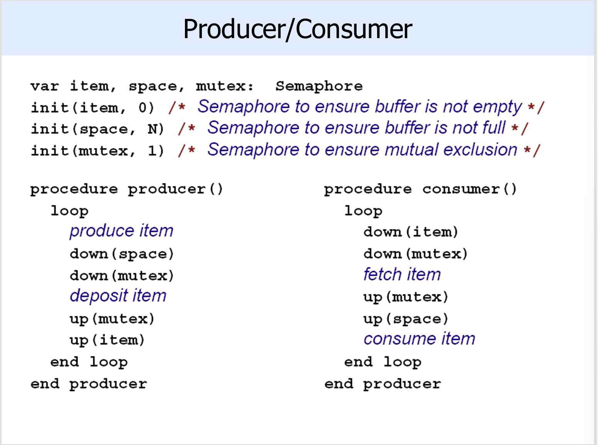
Monitors:
- shared data
- entry procedures
- Internal procedures
- (Implicit)monitor lock
- One or more conditional variables
- Processes can onyl call entry procedures and only one process can b e in the monitor at one time
Conditional variables
this is associated with high-level conditions - for example this can be used to indicate whether some space has become available in the buffer
Operations
- wait(c): releases monitor lock and waits for c to be signaled
- signal(e): wake up one process waiting for C
- broadcast(c): wake up all processes waiting for C
Signals do not accumulate
- condiiton variables signaled with no one waiting fo ri, the signal is lost
back to the customer example
// pseudo-code
monitor ProducerConsumer
condition not_full, not_empty;
integer count = 0;
entry procedure insert(item)
while (count == N) wait(not_full);
// if this is in a if statement
//
insert_item(item); count++;
signal(not_empty);
entry procedure remove(item)
while (count == 0) wait(not_empty);
remove_item(item); count--;
signal(not_full);
end monitor
if the whiles are replaced with if:
monitor ProducerConsumer
condition not_full, not_empty;
integer count = 0;
entry procedure insert(item)
if (count == N) wait(not_full);
// if this is in a if statement
//
insert_item(item); count++;
signal(not_empty);
entry procedure remove(item)
if (count == 0) wait(not_empty);
remove_item(item); count--;
signal(not_full);
end monitor
consider the following executiong order
- producer 1 tries to insert so it is waiting (count = N)
- customer 1 consumes an item (count = N-1)
- producer 2 insert, since count is not N, it does the insert (count = N)
- producer 1 insert, the if condition has passed before producer 2 insert so it would insert (count = N+1)
so the buffer exceeds the maximum item it can hold
monitors are a language construct and is not supported by c
in pintos we have an explicit monitor lock, in java there are sychronized methods and no condition variables
Summary
Lock
- Reader/writer locks
- often exposed with Minitor language construct
- Within a process
- 1 process/thread in critical section
mutex
- Like lock, but can work across processess too
semaphore
- like mutex, but can let in N processes/threads
lecture 8 deadlocks
the dining philosopher example
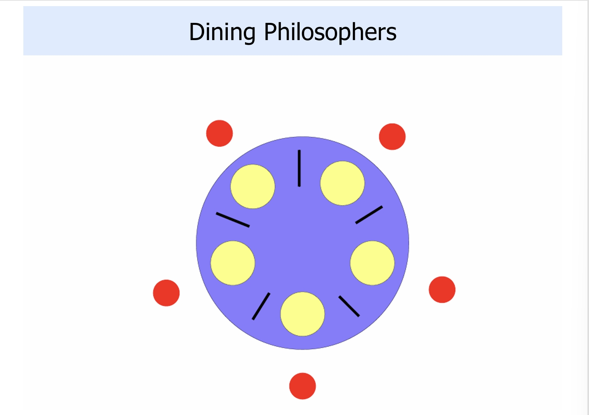
so there are 5 philosophers and 5 single chopsticks
each philosopher need two chopsticks to eat
if everyone tries to get the same chopstick, deadlocks
deadlock:
Set of processes is dead lock if each process is waiting for an event that only another processs can causes
4 conditions, most common deadlock is Resource deadlock
- Mutual exclusion: each resource is either available or assigned to exactly one process
- Hold and wait: process cna request resources whil it holds other resources earlier
- No preemption: resources given to a process cannot be forcibly revoked
- Circular wait: a set of processes in a circular chain, each waiting for a resource held by the next process
Resource Allocation Graphs
a Directed Graph
- edge form resource to process means that the process is currently owning the process
- edge from process to resource means that ht eprocess is currently blocked waiting for the resource
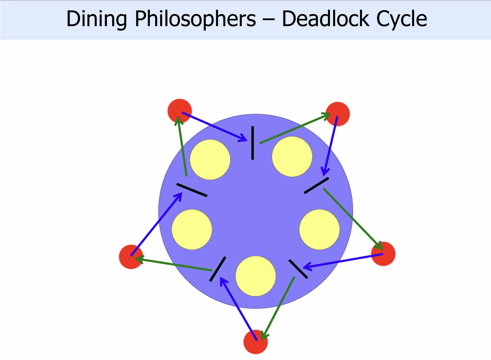
delaing with dead lock
strategies:
ignore it: this works when contention for resource is low or deadlock infrequent
detection & recovery
After system is deadlocked, detect the dealock and recover from It
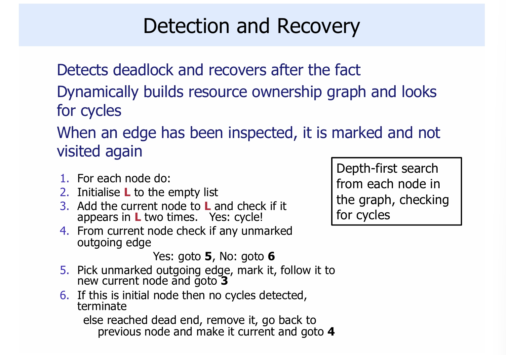
example
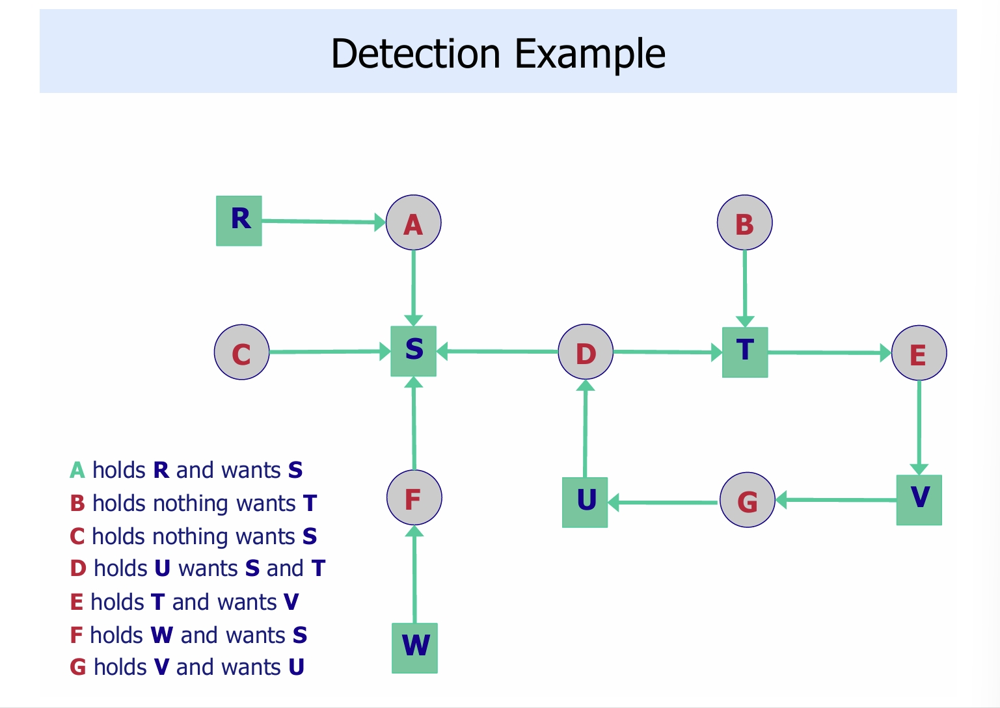
so we do BFS, we find a cycle TEVGUD
but this is time-consuming
recovery can do the following
- Preemption: temporarily take resource from owner and give to another
- Rollback: Processes are periodically checkpointed, so on deadlock just Rollback
- Killing the process: directly kill pid
dynamic avoidance:
system grants resource when it knows that it is safe to do so
Prevention
we focus on the 4 conditions(above)
we can do
- remove Mutual Exclusion condition: e.g. share the resource
- remove Hold and Wait condition: requires all the processes to request resources before start, but you need to know what you need in advance
- remove No-preemption condition: e.g. forcing process to give up printer half wat not good
- remove circular wait condition:
-
- Force single resource per process, then there is Optimality issues
-
- resources, processes must ask for resources in order
or
acquire locks Atomically - protect all lock acquisition by global lock(lock acquisition) - which Typically means locks acquired at start of functions
Giving up locks - give up the lock voluntarily
ordering the resources and thus order lock acquisition 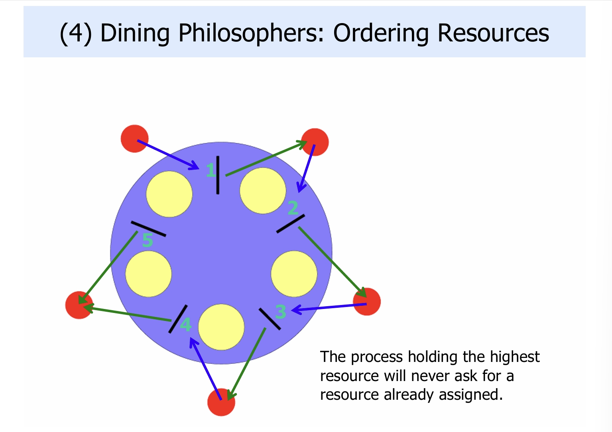
Communication deadlock
Process A sends message to B and blocks waiting on B's reply
but B didn't get A's message then A is blocked, and B is blocked waiting on the message
so Ordering resource and careful scheduling does not work however
we should use commiunication protocol based on timeouts
Livelocks
the threads/processes are not blocked, but they or the system as a whole not making progress
Starvation:
need to alter the scheduling policy
summary:
Resource deadlock:
- 4 condition
- resource allocationi Graphs Strategies for avoiding deadlock
communication deadlock: scheduling policy
livelock: overall system make no progress
lecture9 memory management
memory is the key component of computer in the con Neumann architecture modelall data and code is stored in memory
memory management needs to provide allocation and protection
requirements:
we have no knowledge of how memory address generated and no knowledge what memeory addresses are used for
Overview
Basic concepts: - memory allocation - swapping: exchange between the disk and the network
VitualMemeory - paging
Demand paging - page replacement models - working set model
linux implementation
logical/Phisical address space
memory management binds logical address space to physical address space
- Logical address is generated by the CPU and seen by processes
- Physical address is seen by the memory unit and referes to physical system memory
these are same in compile and load-time address-binding schemes
but different in executing time address-binding schemes
memory management unit(MMU)
mapping logical to physical addresses
user process deals with logical address only
MMU has to be fast so it is HARDWARE
Contiguous Memory Allocation
Main memory usualy split into two partitions:
- Resident operating system(kernel), this is ususally held in low memory
- user processes(user), this is held in high memory
contiguous allocation with relocation registers
- base register contains value of the smallest physical address
- limit register contains range of logical addresses, each logical address must be less than limit register
- MMU maps logical address dynamically
so we do this 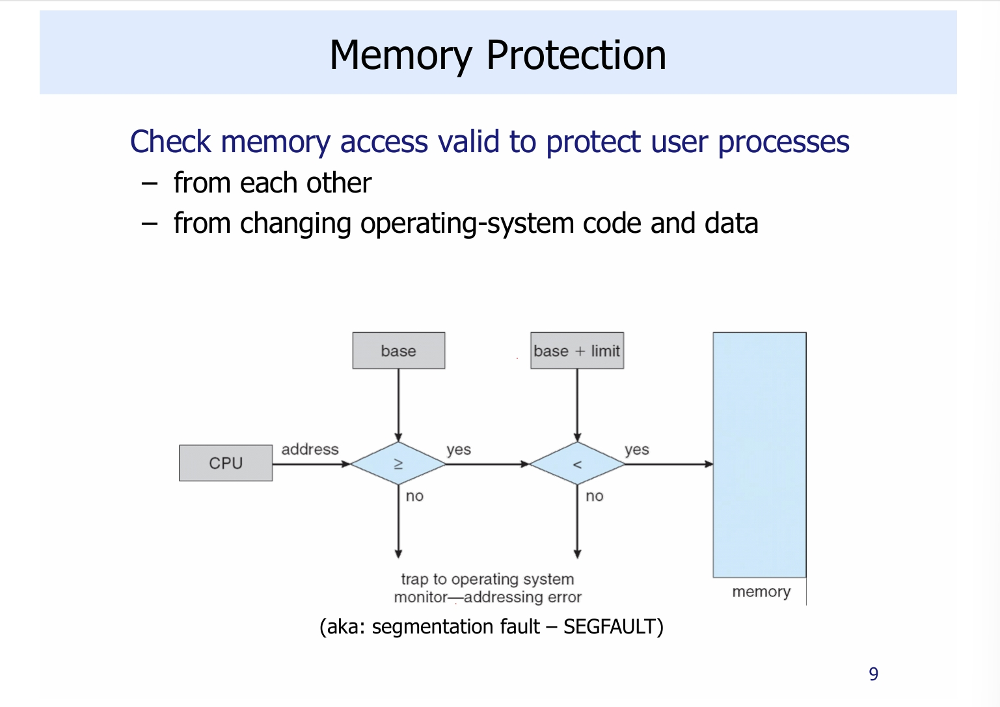
multi-partition allocation
hole: - block of available memory - holes of various size scattered throughout memory
when a process arrives, allocate a hole bug enough
so it maintains information about allocated partitions and free partitions
dynamic storage allocation
- first fit: allocate the first hole that is big enough
- best fit: allocate smallest hole that is big enough, but you must search the entire list, unless ordered by size
- worst fit: allocate largest hole, must search list and produces largest leftover hole
fragmentation:
external fragmentation: you have 100MB of free memory but in 200 half a MB holes
internal fragmentation: allocated memory larger than requested memory
reduce external fragmentation by compaction
- shuffle memory contents to place all free memory together in one large block
- Leads to I/O bottlenecks
Swapping
the problem is that the number of processes id limited by the amount of available memory, but only the running process need to be in memory,
so we simply swap them out
- swap processes temporarily out of memory to disk
- bring back into memory for continue execution
- requires swap space(which can be a file or partiiton on disk)
- Transfer time is the major part of swap time
sometimes the computer is doing nothing because it is moving threads in and out instead of executing the threads
so by constantly moving the threads it provides the illusion of running all the threads at once
Virtual memory
separation of user logical memory from physical memory
since logical address space can be much larger than physical address space
this can be done with paging or segmentation
paging:
so the logical address space of process can be noncontiguous, the processes are allocated physical memoty when available
we have frames
- fixed-size blocks of physical memory
- keep track of all free frames
pages
- block of sam e size logical memory
To run program of size n pages
- find n free frames and load program
- set up a page table
this is then pass to the MMU(hardware) for converting logical address to physical address
tutorial
1.
What is the advantage of a paged virtual memory system with a (a) small page size and (b) large page size
with a small page size, you can allocate more threads accurately(imply less internal fragmentation, even if you request 1 byte, the OS gives you a whole page), so more efficient memory use
with a large page size, you can write more code in the thread and less mapping to do so faster, less overhead for address translation
2.
Describe how a context switch affects the virtual memory system
the context switch basically moves the thread not running to other place and the running thread to the main memory
(we dont always need all the process in the memory?)
we can have multiple page tables and switch them when we need to run another process
Adrdress Translation:
the address generated by the CPU can be divided into
Page number (p)
- Used as index into page table
- Page table has base address of pages in physical memory
Page offset (d)
- Defines physical memory address sent to MMU
- combines with base address
so we have
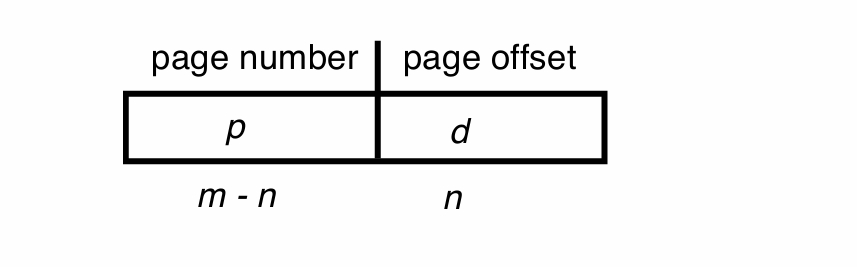
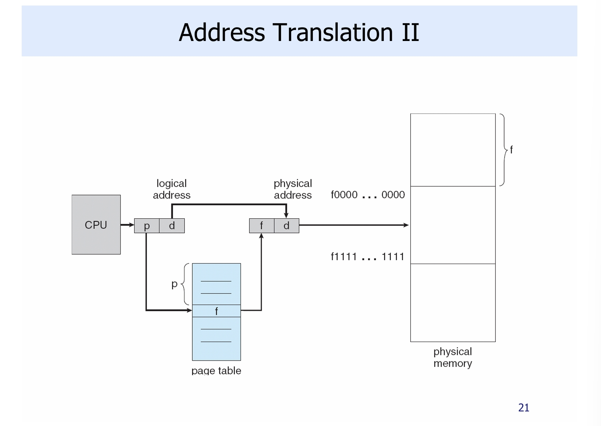
this is what the MMU does, we keep the offset and translate the page number in the page table
by using paging, everything is the same size, so it reduces external memory fragementation
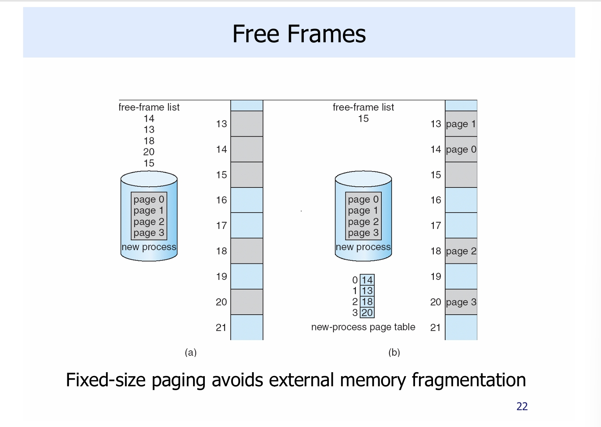
memory protection:
this is implementaed by associating protection bits with pages
so there is a valid-invalid bit attached to each page table entry:
if valid: legel page
- associated page in process; logical address space
if Invalid: page is missing
- page not in process' logical address space(page fault)
- need to load the page(demand paging)
- Incorrect access(program error)
null is a address it always point to 0
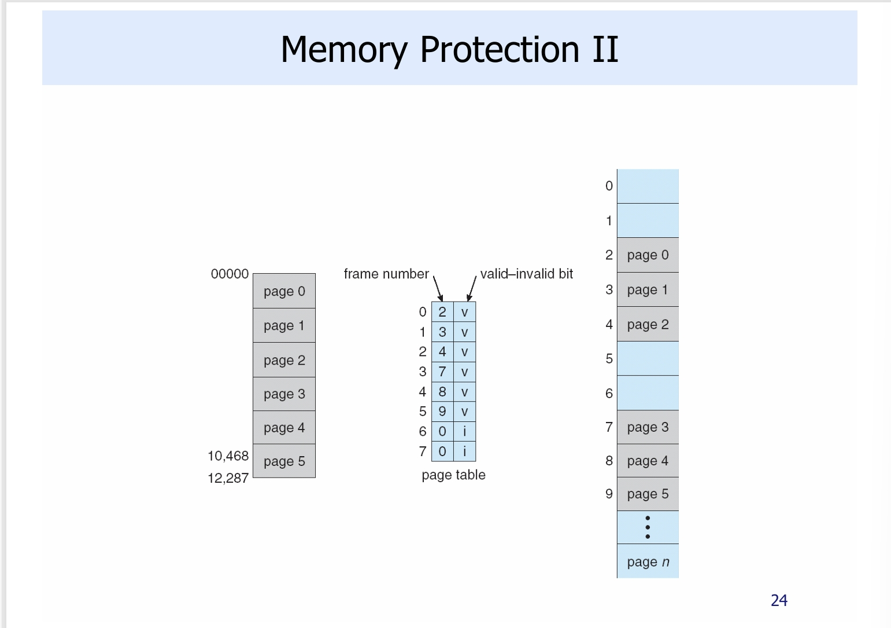
exam question:
An embedded system uses a 16-bit big-endian architecture. It supports virtual memory management with a one-level page table. It has a page size of 1 KByte. Each page table entry contains the frame's physical address; the least significant bit represents a valid bit; the second least significant bit is the modified (dirty) bit.
The following are the current entries in the page table (in hexadecimal notation):
- 0x2C00 valid bit 0,
- 0x0403
- 0xCC01
- 0x0000
- 0x7C01
Translate the following virtual memory addresses to physical memory addresses using the page table given above (if possible):
- (i) 0xB85
- (ii) 0x1420 (page fault beyound end)
- (iii) 0x1000
- (iv) 0xC9A (page fault invalid)
1Kb = \(2^{10} b\) so 10 significant bits
we only use the least 10 bits
so \(0xB85 = 0p\underbrace_{p}{0000 10}|\underbrace_{d}{11 1000 0101}\)
so we should go to the second entry in the page table
which is 0xCC01, 1100 11|00 0000 0001
we check the valid bit, valid bit 1
then we map the page number p to the physical address
0000 10 -> 1100 11
so the final address
is 1100 1111 1000 0101
the dirty bit means nothing for now
page table implementation
page table is kept in main memory
- Page table base register(PTBR) points to page
- Page table length register(RTLR) indicates size
the problem is inefficient - every data/instruction access requires two memory accesses: one for page table and one for data/instruction
the MMU in segmentation does arithmetical operations(base and limit registers),, but MMU in paging needs to look up stuff in the page table
so we cache
associative memory:
Solution: use special fast-lookup hardware cache as associative memory
Associative memory: Supports parallel search
for translation(p,d)
- if p in associative register, get the frame # out
- otherwise get frame # from page table in the memory
Translation Look-aside Buffers(TLBs)
SOme TLBs store address-space ids(ASIDs) in entries
- this uniquely identifies each process to provide address-space protection for that process
TLBs usually needs to be flushed after context switch (each process has its own page table, so not flushing causes errors)
- can lead to substantial overhead(every instruction would call the TLB)
- for kernel pages for system calls, it is the same for every process or thread, so we dont need to flush the entire TLB, we only need to flush those related to the user pages
the page table should be somewhere that only the OS kernel can access, not the user
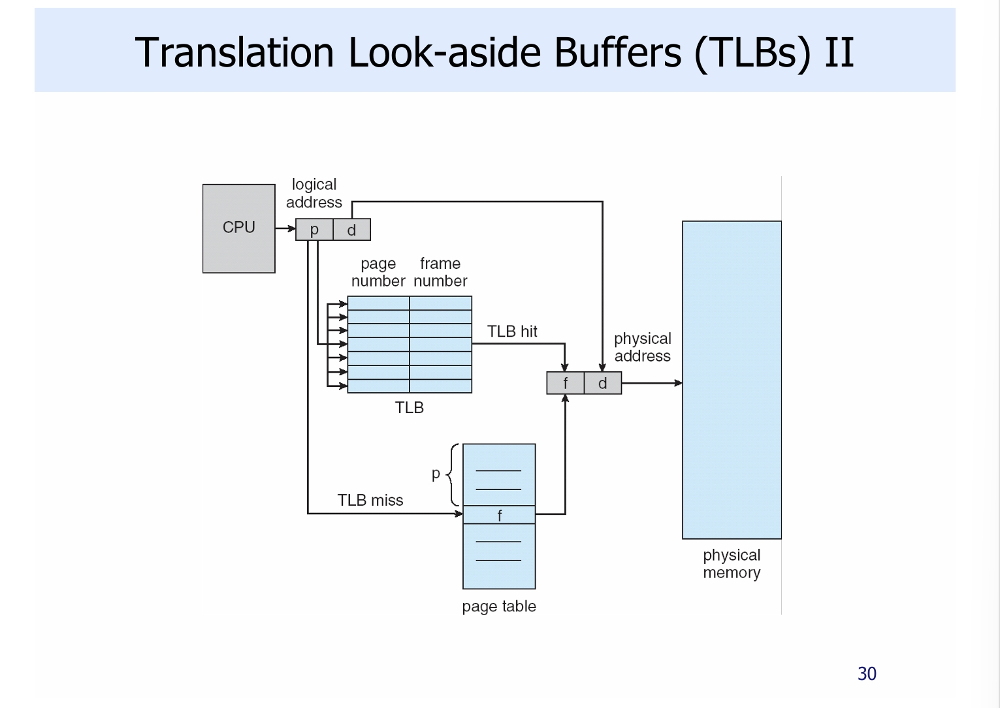
so this is the MMU that is implmented today
Performance: Effective Access Time
Associative Lookup = \(\epsilon\)
Assume memory cycle time = 1 \(\mu\) sec
Hit ratio \(\alpha\)
- the fraction of times that page found in associative refister
- ratio related to number of associative registers
Effective Access Time(EAT) - \(EAT = (\epsilon + 1)\alpha + (\epsilon + 2)(1-\alpha) =2 + \epsilon - \alpha\)
when hit, we do \(\epsilon + 1\) (1 for the memory cycle time) and times the ratio
when miss we do two matches(1 in the associative and miss and another in the memory)
Page table types
- Hierarchical page table
- Hashed page table
- Inverted page table
Hierachical page table
this make use of two-level paging
this form a 3-level tree with the outer page table -> page table -> memory
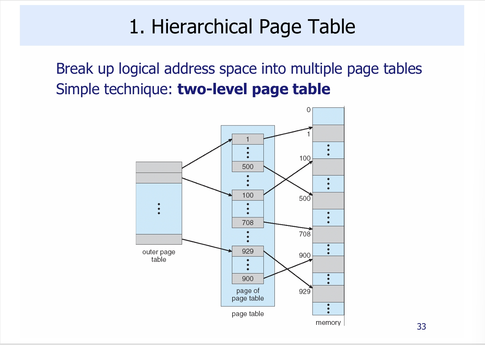
Two level Paging:
THe logical address is divided(assuming 32bit machine with 1K 2^10b page size)
- page number 22 bits
- page offset 10 bits
the page table is paged so the page number
- 12 bit page number
- 10 bit offset
so you get something like
| p1 | p2 | d |
today's machine has 4 levels and moving to 5 (active field of research)
the EAT would then be \((\epsilon + 1)\alpha + (\epsilon + 3)(1 - \alpha) = 3 + \epsilon -\alpha\)
on 32-bit machine with 4kb pages - page table will be at leas 4MB (4B * 2^(32-12))
on 64-bit machine - page table needs 2^52 entries, if 8bytes, 30 million GB
so dont store entry per page but per frame
hashed page table
Hash virtual page number into page table
- page table contains chain of elements hashing to the same location
- search for match virtual page number in chain
- extract corresonding physical frame if match found
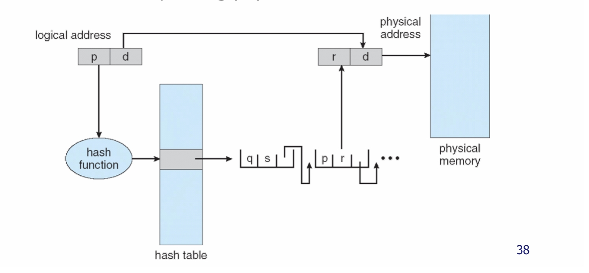
inverted Page table
entry for each page frame of memory consisting of
- virtual address of page stored in that memory location
- information about process that owns the page
this decrease memory needed to store page table. but increases time to search table when page reference occurs
we use hash table to limit search to one or few entries
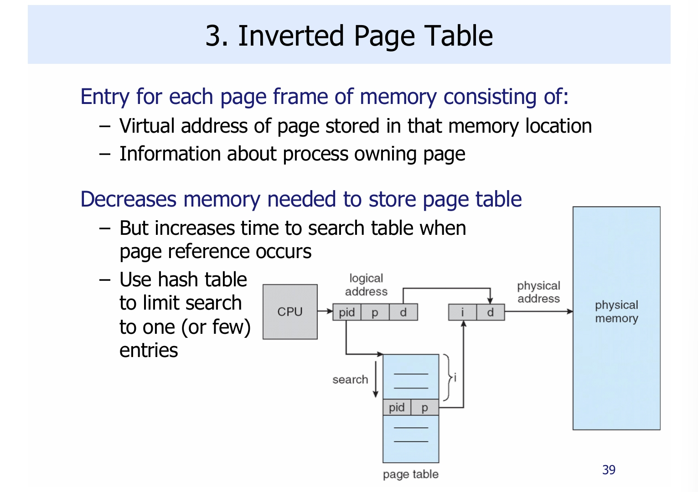